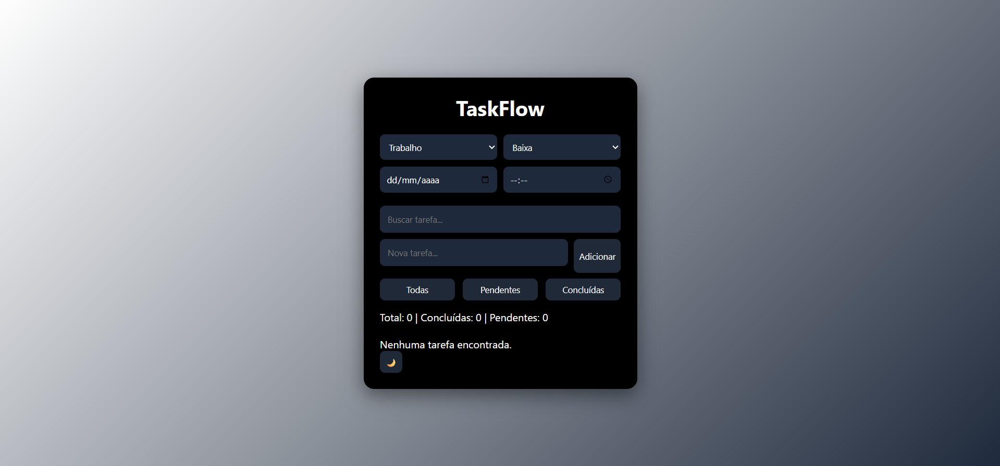
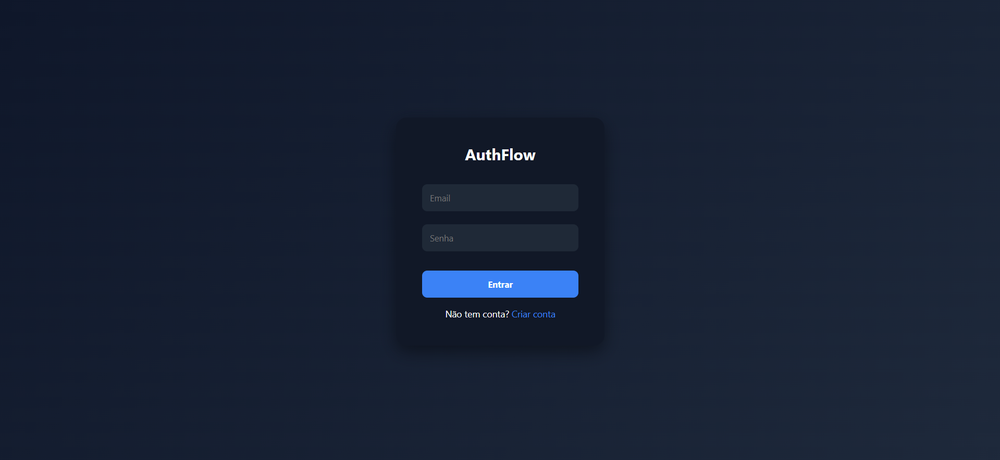
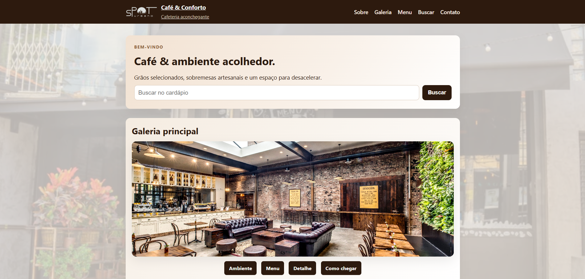

Portfólio Full Stack
Sou desenvolvedora Full Stack, com capacidade de atuar em todas as camadas do desenvolvimento de aplicações, desde a interface com o usuário até a lógica de servidor e banco de dados. Tenho experiência na criação de soluções completas, unindo front-end e back-end de forma eficiente para entregar sistemas funcionais, organizados e escaláveis. Busco sempre desenvolver projetos que não apenas funcionem bem, mas que também proporcionem uma boa experiência ao usuário, aliando performance, usabilidade e qualidade de código.
Ver meus projetosSou uma desenvolvedora apaixonada por tecnologia e por transformar ideias em soluções reais. Atuo como Full Stack, o que me permite trabalhar tanto na construção de interfaces quanto na lógica por trás das aplicações, sempre buscando unir funcionalidade com uma boa experiência para o usuário. Gosto de aprender constantemente e me desafiar com novos projetos, aprimorando minhas habilidades e explorando diferentes tecnologias. Tenho interesse em desenvolvimento web, organização de sistemas e criação de soluções práticas que façam diferença no dia a dia. Estou sempre em evolução, buscando crescer profissionalmente e contribuir com projetos que gerem impacto positivo.

Sistema de gerenciamento de tarefas com foco em produtividade. Permite criar, editar e organizar atividades de forma intuitiva.

Sistema de autenticação com validação de login e cadastro. Implementa controle de acesso e segurança básica de usuários.

Plataforma web com conteúdo esportivo, focada em navegação dinâmica e experiência do usuário.
Projeto acadêmico com lógica de programação aplicada, simulando escolhas e interações em sistema.
Email: mellani0066lyvian@email.com
LinkedIn: linkedin.com/in/mellani-lyvian